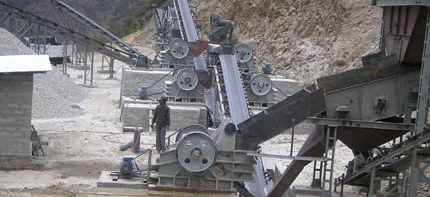

- Project Case
- Zenith Concrete Crushing Plant in Brunei
- Zenith Stone Crusher in Angola
- Manufacturing Sand From Rocks With B-VSI-7611 in UAE
- Zenith Screening Plant in Palestine
- Mexico 120-150tph Stone Production Line
- Peru 60-80 tph Stone Production Line
- Australia 150tph Stone Crushing and Screening Plant
- A Very Successful 200-250tph Crushing Plant in Kenya
- Kenya 30-40 TPH Stone Production Line
- Kenya 100 TPH Mobile Stone Production Line
- Crushing Plant in Ghana from Zenith 400-450tph
- Oman 200 TPH Stone Production Line
- Zenith Portable Limestone Crushing Line
- Zenith 300TPH Complete Crushing Line in Jummum, KSA
- Zenith XZM Ultrafine Mill in INDIA
- Limestone Grinding Plant in Belgium
- XZM221 Ultrafine Mill in Egypt
- Grinding Plant in Mexico
- Grinding Plant in Thailand
- Zenith 100-120tph Stationary Crushing Line in Addis Ababa
- Zenith 100-120 T/H Mobile Crushing Line in Nairobi
- Zenith 100-120tph Stationary Crushing Line in Kenya
- Tanzania 100-120 TPH Stone Production Line
- Zenith Cone Crusher Line In Indonesia
- Malaysia 300TPH Impact Crushing Plant
- Zenith 300 TPH Stone Production Line in Suhar-Liwa, Oman
- Zenith Stationary Basalt Crushing Line In Jeddah
- Aggregate Plant
- Mineral Plant
- Artificial Sand Making Plant
- Construction Waste Recycling Plant
Silica sand beneficiation plant
Aggregate processing plant
The layout principle in large scale aggregate processing plant is that:
Make full use of the terrain, reduce the construction work, make material fed timely, reduce discarded materials. The rate of finished product is high and is asked to reach 85%-90%. When the rate is low, the discarded materials should be considered to be utilized and should be crushed for the second time to form closed-circuit production. When coarse crushing, open-circuit process is usually used. When medium crushing and fine crushing, closed-circuit production will be used.
In aggregate process plant, the sound that comes from vibration is so loud so that the key to improving working conditions is to reduce noises.

The quality requirements of aggregate
1．The sizes of coarse aggregate are divided as follows: the first gradation, 5～20 mm; the second gradation, 5～20，20～40 mm; the third gradation, 5～20，20～40，40～80 mm; the forth gradation, 5～20，20～40，40～80， 80～120（150）mm.
2．The control of fine aggregate and its fineness modulus is general 2.4~2.8. The basic types of the aggregate (source) 1）Natural aggregate: low cost, but the gradation is different with the designed gradation of concrete. 2）Artificial aggregate: good quality, the aggregate can be used at the stone that is dug out, but the cost is high 3）Mixed aggregate: natural aggregate is given priority and artificial aggregate is used as supplement.
Aggregate processing and processing equipment
Processing the collected raw materials, usually need to do crushing, screening and washing to get rubbles and artificial sands that comply with gradation and have no impurities. According to the aggregate processing process flow, the aggregate processing plant will be built.
1. The aggregate crushing uses crusher to do stone crushing and the commonly used equipments are Jaw Crusher, Cone Crusher and Impact Crusher.
2. In order to be graded, the aggregate, the gathered natural raw materials or the crushed mixture should be screened. There are two kinds of grading methods, hydraulic screening and mechanical screening. The large scale screening usually uses mechanical screening. There are two kinds of mechanical screening, eccentric vibration and inertia vibration.
3、washing
4. Sand making: sand box is used to place the distributaried sewage mortar. Then after first washing, the sewage mortar is sent to sand washing machine for next washing. Artificial sands are processed by rod mill.
5、Aggregate processing plant
Large scale aggregate processing plant usually puts the processing machinery equipments according to process flow, which is crushing, screening, washing ,transportation and stacking. Among this, screening floor is the aggregate processing plant that mainly does screening work.
The screening floor is the aggregate processing plant that mainly does screening work and it is usually that: the materials are sent by belt conveyor, then by two way vibrating screen, five kinds of gradation aggregates are screened, then the waste materials will be washed by sand box and sand washing machine to be finished sand materials. Aggregates in different grades will be sent to finished products stock heap by belt conveyor. Aggregate processing plant should be next to concrete system as close as possible so that the plant and concrete system can share finished products stock heap.
Sand making and crushing of artificial aggregate will be done by these equipments: Jaw Crusher or Cone Crusher will do coarse crushing, Impact Crusher or Cone Crusher will do medium crushing. After crushing and sieving, the materials will be finely crushed then sent to finished products stock heap.
The process system of natural aggregate screening and super size stone crushing, sand making by rod mill, is that in the base of gravel material screening floor, Jaw Crusher or Impact Crusher that can crush super size stone is added in the system. This system also uses the screening equipment that screens the natural materials to screen the crushed mixture.
Aggregate screening
In order to be graded, the aggregate, the gathered natural raw materials or the crushed mixture should be screened. There are two kinds of grading methods, hydraulic screening and mechanical sceening. The former does gradations according to different aggregate particles size and different hydraulic thick degrees and is suitable for fine aggregate. The latter does aggregate gradation according to mechanical force and sieves with different pore size and is suitable for the coarse aggregate.
The screens in mechanical screening usually use high carbon steel to be welded into square screen holes. Screen hole side lengths are 112 、75 、38 、19 、5mm, used to screen coarse aggregates in different grades, such as 120 、80、40、20、5mm. When the screen is tilt, the screening hole size should be appropriately increased to ensure the screening particle size. Large scale screening usually uses mechanical vibrating screen and there are eccentric vibrating screen and inertia vibrating screen.
Related equipment used in this plant:


Request a quotation
CONTACT US
0086-21-58386256
86-21-58383028
info@crusherproduct.net
SERVICE ONLINE >